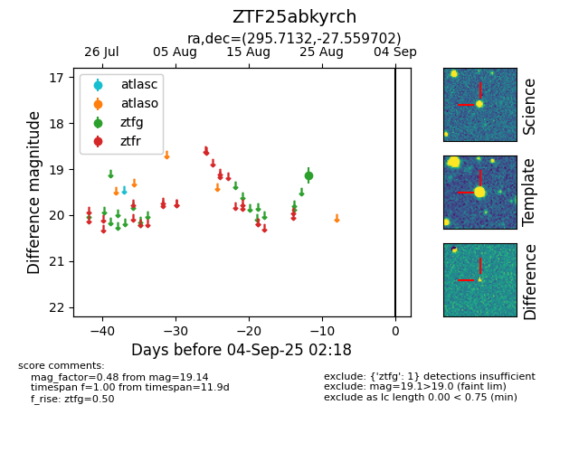

Target ZTF25abkyrch at 2025-08-26 11:45, see:
FINK: fink-portal.org/ZTF25abkyrch
Lasair: lasair-ztf.lsst.ac.uk/objects/ZTF25abkyrch
ALeRCE: alerce.online/object/ZTF25abkyrch
alt names
ZTF25abkyrch (ztf,fink)
coordinates:
equatorial (ra, dec) = (295.7132,-27.55970)
galactic (l, b) = (12.5081,-22.73654)
photometry
last ztfg=19.14
1 ztfg detections
